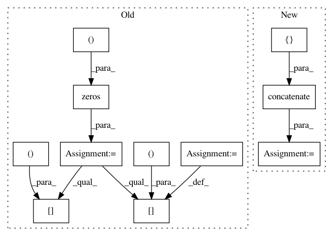

65094fc108c9db13fde4cbd5ab99491413842007,keras_retinanet/preprocessing/csv_generator.py,CSVGenerator,load_annotations,#CSVGenerator#Any#,199
Before Change
path = self.image_names[image_index]
annots = self.image_data[path]
boxes = np.zeros((len(annots), 5))
for idx, annot in enumerate(annots):
class_name = annot["class"]
boxes[idx, 0] = float(annot["x1"])
boxes[idx, 1] = float(annot["y1"])
boxes[idx, 2] = float(annot["x2"])
boxes[idx, 3] = float(annot["y2"])
boxes[idx, 4] = self.name_to_label(class_name)
return boxes
After Change
for idx, annot in enumerate(self.image_data[path]):
annotations["labels"] = np.concatenate((annotations["labels"], [self.name_to_label(annot["class"])]))
annotations["bboxes"] = np.concatenate((annotations["bboxes"], [[
float(annot["x1"]),
float(annot["y1"]),
float(annot["x2"]),
float(annot["y2"]),
]]))
return annotations
In pattern: SUPERPATTERN
Frequency: 3
Non-data size: 11
Instances
Project Name: fizyr/keras-retinanet
Commit Name: 65094fc108c9db13fde4cbd5ab99491413842007
Time: 2018-10-08
Author: h.gaiser@fizyr.com
File Name: keras_retinanet/preprocessing/csv_generator.py
Class Name: CSVGenerator
Method Name: load_annotations
Project Name: fizyr/keras-retinanet
Commit Name: 65094fc108c9db13fde4cbd5ab99491413842007
Time: 2018-10-08
Author: h.gaiser@fizyr.com
File Name: keras_retinanet/preprocessing/coco.py
Class Name: CocoGenerator
Method Name: load_annotations
Project Name: tensorly/tensorly
Commit Name: fd14ad84635c22afb3f61348afe5730b4ecc6795
Time: 2018-04-16
Author: jean.kossaifi@gmail.com
File Name: tensorly/decomposition/candecomp_parafac.py
Class Name:
Method Name: initialize_factors